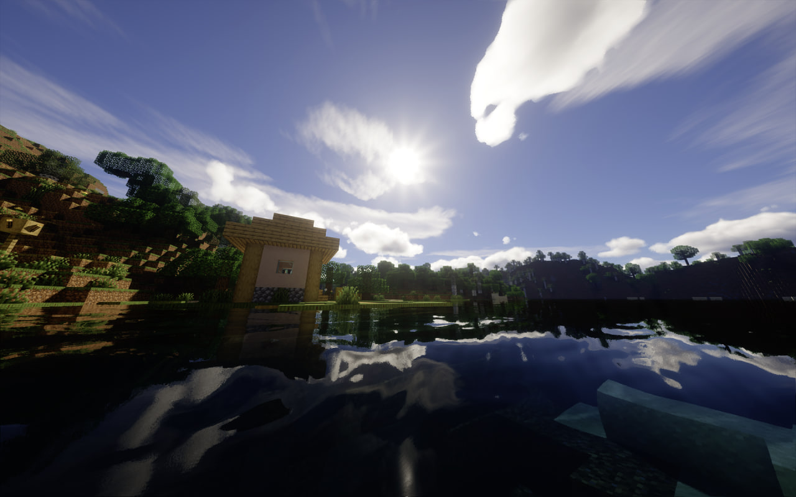

Швидкий. Простий.
G9 Launcher
Завантажуй будь-яку версію гри, налаштовуй FPS та грай без обмежень. Безкоштовно та безпечно.

G9 Launcher: BETA
Рання тестова збірка з новими функціями, які ще не потрапили у стабільну версію. Можливі баги — повідом про них у підтримці.
Чому саме ми?
Швидкодія
Програма надає можливість всередині неї змінити параметри для підвищення FPS у грі. Розробники створюють його за допомогою ШІ інструментів та редагують код.
Сучасний дизайн
Інтерфейс створено за мотивами оригінального лаунчеру гри з зручним положенням елементів (UX/UI).
Безпека
Програма не має у собі вірусів, використовуються надійні сервери для завантаження гри на ваш пристрій.
Що таке G9 Launcher?
Лаунчер для запуску Minecraft
G9 Launcher — це програма для завантаження та запуску Minecraft на твоєму ПК. Просто встанови, обери версію та грай — без зайвих кроків.
Підтримуються всі популярні версії Minecraft, включно з модами та знаменитими збірками. Вбудований оптимізатор FPS дозволяє грати навіть на слабких ПК.

Гайди по лаунчеру
[ Перевірте чи мають гравці різні нікнейми, перевірте чи ви підключені до однієї мережі та перевірте чи використовуєте одну і ту саму версію. 1. Створіть світ де будете грати, через гра наодинці. 2. Зайдіть у ігрове меню через кнопку ESC на клавіатурі 3. Знайдіть кнопку відкрити для LAN і виберіть параметри. Для того щоб друзі зайшли вони мають бути в головному меню та натиснути на кнопку гра в мережі. Там повинен з'явитися ваш світ з назвою натиснувши на який ви зможете приєднатися! Вдалої вам гри! ]
[ Крок 1: Завантаження та розпакування Перейдіть за посиланням на GitHub та завантажте останній реліз патчера (файл .zip). Розпакуйте вміст архіву у будь-яку зручну папку на вашому комп'ютері. Крок 2: Встановлення компонентів Запустіть файл KexSetup.exe від імені адміністратора. У вікні, що з'явиться, натисніть кнопку "Install". Дочекайтеся завершення процесу — це додасть необхідні бібліотеки у вашу систему Windows 7 або 8 для запуску сучасних програм. Крок 3: Налаштування G9 Launcher Після встановлення патчера натисніть правою кнопкою миші на ярлик або .exe файл G9 Launcher. Оберіть "Властивості" (Properties), перейдіть у вкладку "VxKex". Крок 4: Активація режиму сумісності У вкладці VxKex поставте галочку навпроти "Enable VxKex for this program". У випадаючому списку виберіть "Windows 10" або "Windows 11". Натисніть "Apply" (Застосувати). Крок 5: Запуск Тепер просто запускайте лаунчер як зазвичай. Патчер автоматично "підмінить" версію системи для програми, дозволяючи їй працювати без помилок про несумісність.]
[ Крок 1: Виділення оперативної пам'яті (RAM) Перейдіть у розділ "Налаштування" в боковому меню лаунчера. Знайдіть повзунок "Виділена ОЗУ". Для стабільної гри на сучасних версіях (1.20+) рекомендується виділяти від 4 ГБ до 8 ГБ, але не більше половини від загальної кількості вашої пам'яті. Крок 2: Оптимізація процесора У блоці "Процесор" виберіть кількість потоків, які лаунчер буде використовувати для гри. Якщо у вас потужний комп'ютер, залиште значення "Авто", або виберіть максимальну доступну кількість ядер для швидшого завантаження світів. Крок 3: Використання аргументів JVM G9 Launcher автоматично застосовує сучасні параметри оптимізації, такі як -XX:+UseG1GC (сміттєзбирач G1) та -XX:+UnlockExperimentalVMOptions. Це допомагає уникнути різких "фризів" під час гри та робить процес плавнішим. Крок 4: Встановлення оптимізаційних модів Для максимального ефекту обирайте версії з позначкою Fabric або Forge у списку версій. Після першого запуску встановіть у папку mods такі моди, як Sodium (для Fabric) або Embeddium (для Forge/NeoForge) — це може підняти ваш FPS у 2-3 рази. Крок 5: Налаштування графіки у гріПісля запуску Minecraft зайдіть у налаштування графіки:Дальність промальовування: 8-12 чанків.М'яке освітлення: Вимкнено або Мінімум.Частота кадрів (Max FPS): Unlimited (Без обмежень). ]
[ Він ще в розробці!!! ]
[ їх немає або ми виправляємо оновленнями! ]
Інтерфейс лаунчера
Натисни на скріншот, щоб переглянути у повному розмірі.


Підтримка
Знайшов баг? Заповни форму — ми розглянемо його якнайшвидше. Також можеш написати напряму на пошту.
Маєш ідею для покращення G9 Launcher? Розкажи нам — найкращі ідеї потраплять у наступні оновлення!